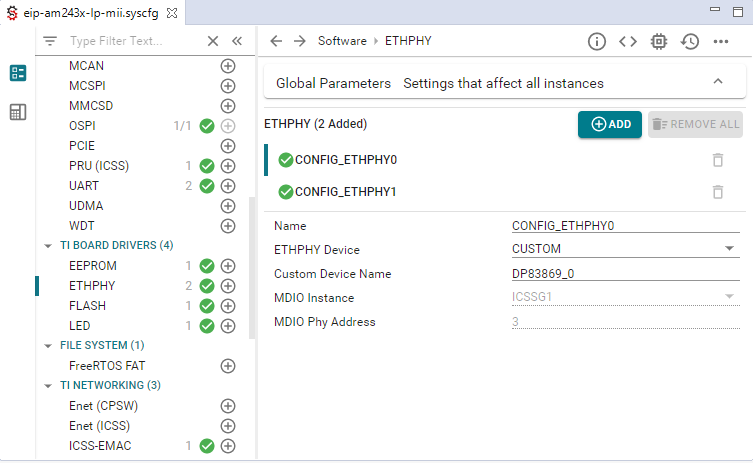

Overview
This software component is designed for Texas Instruments SITARA AM243X MCU based platforms with PRU-ICSS IP to enable customers to integrate EtherNet/IP Adapter functionality into their system. It implements a CIP and EtherNet/IP stack based on the PRU-ICSS firmware by Texas Instruments.
Licensing
KUNBUS License
Copyright © 2023, KUNBUS GmbH
All rights reserved.
Redistribution and use in source and binary forms, with or without modification, are permitted provided that the following conditions are met:
-
Redistributions of source code must retain the above copyright notice, this list of conditions and the following disclaimer.
-
Redistributions in binary form must reproduce the above copyright notice, this list of conditions and the following disclaimer in the documentation and/or other materials provided with the distribution.
-
Neither the name of the copyright holder nor the names of its contributors may be used to endorse or promote products derived from this software without specific prior written permission.
THIS SOFTWARE IS PROVIDED BY THE COPYRIGHT HOLDERS AND CONTRIBUTORS "AS IS" AND ANY EXPRESS OR IMPLIED WARRANTIES, INCLUDING, BUT NOT LIMITED TO, THE IMPLIED WARRANTIES OF MERCHANTABILITY AND FITNESS FOR A PARTICULAR PURPOSE ARE DISCLAIMED. IN NO EVENT SHALL THE COPYRIGHT HOLDER OR CONTRIBUTORS BE LIABLE FOR ANY DIRECT, INDIRECT, INCIDENTAL, SPECIAL, EXEMPLARY, OR CONSEQUENTIAL DAMAGES (INCLUDING, BUT NOT LIMITED TO, PROCUREMENT OF SUBSTITUTE GOODS OR SERVICES; LOSS OF USE, DATA, OR PROFITS; OR BUSINESS INTERRUPTION) HOWEVER CAUSED AND ON ANY THEORY OF LIABILITY, WHETHER IN CONTRACT, STRICT LIABILITY, OR TORT (INCLUDING NEGLIGENCE OR OTHERWISE) ARISING IN ANY WAY OUT OF THE USE OF THIS SOFTWARE, EVEN IF ADVISED OF THE POSSIBILITY OF SUCH DAMAGE.
Public Licensed Packages
For third party licenses consult the MCU-PLUS-SDK-AM243X Manifest which after installation of the SDK is available at ${MCU_PLUS_SDK_PATH}/docs/mcu_plus_sdk_am243x_manifest.html.
Known Issues
- [DTKEIPA-1921]
- EtherNet/IP CIP API functions (EI_API_CIP_getAttr_xxx) do not support access of Attributes within statically created Classes (Identity Object, TCP/IP Interface Object, Ethernet Link Object, …).
- [DTKEIPA-1919]
- For the General Purpose Discrete I/O Device example the CT20 conformance test reports errors in the Discrete Output Point Object Test:
1> *** Attribute data value incorrect attr 3 = 1, Expected 0
2> *** Attribute data value incorrect attr 3 = 1, Expected 0
3> *** Attribute data value incorrect attr 3 = 1, Expected 0
4> *** Attribute data value incorrect attr 3 = 1, Expected 0
- [DTKEIPA-1334]
- Attribute 28 SystemTimeAndOffset is unstable.
Release Version 3.07.02
New Features
-
[OSS1-3261] Migration to latest MCU+ SDK 09.02.00.49
-
[OSS1-3259] New function EI_API_ADP_setAcdDelay() added, which sets the time in ms to send the first ARP probe. The default value for this delay is 200 ms.
-
[OSS1-3228] Application part of LED's implementation moved from custom drivers.
-
[OSS1-3245] UART implementation moved from custom drivers.
Fixed Issues
- [OSS1-3213]
- CALLOC error reported during CT20 - Encapsulation Test sporadically. Error can be easily recognized on UART output where following message is reported:
CALLOC 1078,1 return NULL (did alloc 0x3f2ff)
PRU_EIP_EmacNrtRxCallback: 0x1d0000 EC is fatal=1,
SRC:PRU_EIP_EmacNrtRxCallback:465
Error: 0x001d0000, Fatal: yes
It's fatal error and device stops to communicate.
It was fixed by replacing unsafe thread access with thread-safe calloc.
- [DTKEIPA-1918]
- CT20 fails after a device reset procedure and cannot reconnect to the device under test.
It was fixed by not closing drivers during the reset.
- [OSS1-3246]
- Fixed an issue where LWIP_HOOK_DHCP_PARSE was not correctly implemented and had resulted in Host name in DHCP mode not being configured correctly.
- [OSS1-3215]
- Errors reported during CT20 - LLDP Data Table Object Test:
1> *** Expected Number of Instances is 1 but found 0.
2> *** Expected Number of Instances is 2 but found 1.
3> *** Expected Number of Instances is 3 but found 2.
4> *** Expected Number of Instances is 4 but found 3.
5> *** Expected Number of Instances is 5 but found 4.
6> *** Expected Number of Instances is 6 but found 5.
7> *** Expected Number of Instances is 7 but found 6.
Errors are reported on Discrete IO device profile sporadically.
It was fixed by switching to the LLDP state machine after receiving a LLDP enable request.
- [DTKEIPA-1603]
- Sporadic messages “pbuf_alloc failed on receiving nrt frame” reported on a UART console. A packet is lost and a retransmission is required. The stack is still able to recover from this error.
After analysis, it was realized that this is not an error.
- [DTKEIPA-1836]
- ACD tests may fail depending on the type of network switch that is deployed between DUT and test PC executing the ODVA ACD Behavior Test.
It has been observed that network switches by some manufacturers do not forward all APR probes within the timings required by Volume 2 EtherNet/IP Adaptation of CIP, Edition 1.32, April 2023, appendix F-1.2.1. It has been verified with a network TAP between DUT and switch that the DUT correctly transmits all 4 ARP probes before transmitting the 2 ARP announce frames. The issue is currently clarified with ODVA.
It was fixed by reset of the initial probe state, when a link-up is detected on the second port.
- [DTKEIPA-1585]
- The Active Supervisor Address (Attribute 10) of the DLR Object contains the Supervisor IP Address and the Supervisor MAC Address once a DLR supervisor is enabled. If all DLR supervisors are disabled Attribute 10 shall be cleared, however only the MAC address field is cleared and not the IP address field.
This issue is solved in PRU firmware binary
Release Version 3.07.01
New Features
-
[OSS1-3175] Migration to MCU+ SDK 09.02.00.03
Fixed Issues
- [OSS1-3207]
- TS-158: Half-duplex support with 9.2 SDK. Half-duplex support is based on SysConfig parameter "Half Duplex Enable" under "ICSS-EMAC" section.
- [OSS1-3104]
- TS-151: EIP BOOTP host name is not changed when set.
- [OSS1-3049]
- TS-149: Problem reading interface configuration in BOOTP mode. Fixed by adding new Adapter API function EI_API_ADP_getIpConfig.
- [OSS1-3190]
- BOOTP does not start on AM243x-LP board.
Release Version 3.07.00
New Features
-
[OSS1-3020] Migration to MCU+ SDK 09.02.00.02
Fixed Issues
- [OSS1-3116]
- The option to automatically adapt to system settings for light/dark modes in the documentation has been disabled. The documentation is now exclusively set to light mode.
Release Version 3.06.04
New Features
-
Upgrade IP stack to lwIP 2.2.0 LTS contained in MCU+ SDK.
-
Half-duplex support enabled.
-
New CIP API function EI_API_CIP_setAssemblyAppType added to apply an application type to an existing assembly instance.
-
New CIP API function EI_API_CIP_setCfgAssemblyCb added to register callback for configuration assembly.
-
Implemented CIP API function EI_API_CIP_createCfgAssemblySimple was removed from CIP API.
Fixed Issues
- [OSS1-2761]
- The connection manager is using 80 bytes as the maximum connection size for ForwardOpen and ForwardClose. This has been fixed by setting it to a maximum of 510 bytes.
- [OSS1-2695]
- ACD Automated Test reports error on P8.5.6 test.
P8.5.6 ***> Did not receive valid ARP in 10 seconds
Fixed by restart INITIAL_PROBE state of ACD state machine when second link-up occurs.
- [DTKEIPA-1928]
- Default hostname for DHCP shall be an empty string. Fixed by setting hostname string from lwip to empty string.
- [DTKEIPA-1917]
- CT20 fails on the Configuration Assembly Instance in the Assembly test.
The following errors are reported:
1> *** Attribute data value incorrect attr 4, Srv Code x0E
1> *** Unexpected success response attr 3, Srv Code x10
1> *** Data Size not equal to size defined for Instance in Device Profile attr 3
The Discrete I/O Configuration Assembly format is described in Volume 1 of the CIP Networks Library in Section 6-10.9, where the Output Configuration Assembly Data Attribute Format is specified as a single byte, to which two attributes of BOOL (Idle Action, Fault Action) are mapped.
Fixed by implementation of configuration assembly instance 103 instead of instance 40. Instance 40 is not required to be implemented for Discrete IO device.
- [DTKEIPA-1838]
- Sporadic LLDP error reported by CT19.1 and CT20 after changing msgTxInterval. The ODVA Conformance Test sets the LLDP msgTxInterval (Instance Attribute 2 in LLDP Management Object) to 5 seconds. After that the DUT correctly transmits a LLDP frame immediately (see IEEE802.1 chapter 9.2.10 Transmit timer state machine). The subsequent LLDP frame is occasionally not send correctly after 5 seconds.
Fixed by reset of 1 second LLDP timer.
Release Version 3.06.02
New Features
-
Header file include directives changed from #include <api/EI_API_xxx.h> to #include <EI_API_xxx.h>.
-
New API function EI_API_ADP_getPortState to query link up/down, speed, and duplex mode.
-
General Purpose Discrete I/O Device example now uses the state machine for the Discrete Output Point Object to control the behavior of the output points.
Fixed Issues
- [DTKEIPA-1916]
- Conditional Class Attributes 2 (Max Instance) and 3 (Number of Instances) added to TCP/IP Interface Object to prevent Rockwell Automation EtherNet/IP Address Commissioning Tool from failing to change the IP Configuration Mode. SOC configuration files for ODVA Conformance Test updated correspondingly.
- [DTKEIPA-1896]
- Retransmission of Bootp requests did not correctly stop once a reply had been received.
- [DTKEIPA-1891]
- Network Status Indicator shows wrong state in Bootp mode.
- [DTKEIPA-1885]
- Forward_Open service request is aborted with ”###### Stack Error: 0x21020000, fatal ######”.
This has been fixed by increasing the Connect Path Size to 255 UINT, which is the maximum permitted by the CIP specifications.
- [DTKEIPA-1841]
- FreeRTOS function uxTaskGetNumberOfTasks() returns a incorrect value. uxTaskGetSystemState() is now used to retrieve the correct array size.
- [DTKEIPA-1839]
- Incorrect default value for TCP/IP Interface Object - Attribute 4.
According to Volume 2 EtherNet/IP Adaptation of CIP, Edition 1.32, April 2023, clause 5-4.3.2.4 Physical Link Object - Attribute 4, the Path Size shall be either 0 or contain a path to an internal interface.
- [DTKEIPA-1792]
- Listen Only connection can be established independently after establishing the Input Only connection once and removing it. Also, a Listen Only connection does not disconnect automatically when the Non Listen Only connection is removed.
- [DTKEIPA-1752]
- Incorrect data type of T->O Network Connection Parameters in forward_open info structure.
- [DTKEIPA-1587]
- MDIO manual mode workaround is not functional in RGMII configuration.
- [DTKEIPA-653]
- After setting the PHY speed to 10 mbps (MBit/s) in RGMII mode the network connection may be lost.
- [DTKEIPA-621]
- DLR unstable in RGMII mode.
Release Version 3.04.02
New Features
-
Examples for Allen-Bradley PLCs now based on Studio 5000.
-
Enhanced documentation of Generic Device and General Purpose Discrete I/O Device examples.
Fixed Issues
- [DTKEIPA-1841]
- After several Set_Attribute_Single service requests to Attributes that shall be stored in non-volatile memory a data abort may occur causing the stack terminate abnormally.
- [DTKEIPA-1743]
- The TI TimeSync driver does not increment the sequence ID in the TimeSync_delayReq packet when just one network port is connected, resulting in a synchronization failure between master and slave clocks.
- [DTKEIPA-1583]
- The ODVA CT19 test suite reports 4 errors when receiving a Shutdown LLDPDU (Time To Live TLV with TTL=0) in the test of the LLDP Management Object.
- [DTKEIPA-1580]
- LLDPDUs are consumed by the EtherNet/IP device but also forwarded to another port on multi-port devices.
- [DTKEIPA-1112]
- EIP_DLR_processDLRFrame fails on large Sign_On frames.
Release Version 3.04.00
New Features
- [DTKEIPA-1708]
- Migration to MCU+ SDK 09.00.00.01
- [DTKEIPA-1710]
- Example implementation for General Purpose Discrete I/O Device (Device Type 0x07).
Fixed Issues
- [DTKEIPA-1580]
- LLDPDUs are consumed by the EtherNet/IP device but also forwarded to another port on multi-port devices.
- [DTKEIPA-1112]
- EIP_DLR_processDLRFrame fails on large Sign_On frames.
Release Version 3.02.02
Fixed Issues
- [DTKEIPA-1752]
- Wrong size of T->O Network Connection Parameters in typedef struct EI_API_ADP_SCmgrForwardOpenInfo (EI_API_def.h).
- [DTKEIPA-1713]
- LLDP_mibConstrShutdownLLDPDU function shall be called instead of mibConstrInfoLLDPDU function in TX_SM_SHUTDOWN_FRAME state of LLDP transmit state machine.
- [DTKEIPA-1604]
- Under high load the device may report CALLOC 'xxx' return NULL (did alloc ...) where 'xxx' stands for the block size that is to be allocated.
Release Version 3.02.00
New Features
- [DTKEIPA-1708]
- Migration to MCU+ SDK 08.06.00.22.
- [DTKEIPA-1710]
- Updated directory structure to allow for future enhancements with additional device profile examples.
Fixed Issues
- [DTKEIPA-1579]
- CT19 reports warnings on Data Table Object test after neighbor devices become inactive. Status code 0x05 is returned instead of the expected code 0x16.
Release Version 3.01.02
New Features
- [DTKEIPA-1530]
- Migration to MCU+ SDK 08.05.00.03.
Fixed Issues
- [DTKEIPA-1589]
- On LP-AM243 hardware the EtherNet/IP stack application is started after a delay of approximately 30s. This is observed on both E2 and E3 revisions of the hardware.
Release Version 3.01.00
New Features
- [DTKEIPA-1198]
- Include suport for LLDP according to IEEE Std 802.1AB™-2016 IEEE Standard for Local and metropolitan area networks - Station and Media Access Control Connectivity Discovery and THE CIP NETWORKS LIBRARY - Volume 2 EtherNet/IP Adaptation of CIP - Edition 1.31 November 2022.
- [DTKEIPA-1561]
- Support for MDIO manual mode workaround added.
- [DTKEIPA-1530]
- Migration to MCU+ SDK 08.05.00.01.
Fixed Issues
- [DTKEIPA-1488]
- Explicit messages may interrupt cyclic communication.
- [DTKEIPA-1333]
- The IP address of EtherNet/IP PTP frames is different from IP address used by CIP and ENIP frames.
- [DTKEIPA-1298]
- DHCP/BOOTP configurations may contain name server address(es) and/or host and domain names. This data is not correctly entered into attributes 5 and 6 of the TCP/IP object.
- [DTKEIPA-1284]
- A failed Get_Attribute_Single request is confirmed as a Set_Attributte_Single response.
- [DTKEIPA-643]
- The ODVA CT18.1 conformance test reports following error:
EtherNet/IP Devices undergoing certification for the first time and multi-port devices receiving an update that adds CIP functionality are required to implement LLDP protocol and LLDP Management Object starting from May 2022.
Release Version 2.01.00
New Features
-
Upgrade IP stack to lwIP 2.1.2 LTS contained in MCU+ SDK.
-
Task priorities can be adjusted in user code. See example in
appProduct.c.
-
Example code extended by simple HTTP Server task displaying the current CPU load. See
appWebServer.c.
-
Migration to MCU+ SDK 08.04.00.01
-
| Feature | Module | Description |
| Custom PHY support | Example application | The example application includes support for integrating alternate PHY components. In the TI BOARD DRIVERS section, set the ETHPHY Device to CUSTOM and the Custom Device Name to DP83869_0 respectively DP83869_1. The symbols DP83869_x are then used to reference the corresponding driver function in CUST_phy.c. The related files are:
-
Example/app.c
-
Example/board/am243x-(lp/evm)/freertos/drivers/ethphy/CUST_phy.c
-
Example/customPhy/inc/CUST_PHY_base.h
-
Example/customPhy/inc/CUST_PHY_dp83869.h
-
Example/customPhy/src/CUST_PHY_base.c
-
Example/customPhy/src/CUST_PHY_dp83869.c
 |
Fixed Issues
- [DTKEIPA-835]
- Removed from Known Issues list as the implemented functionality has been confirmed to be as expected.
Release Version 1.04.10
Fixed Issues
- [DTKEIPA-1246]
- IP address in PTP frames is not updated when DHCP is activated.
Release Version 1.04.09
Fixed Issues
- [DTKEIPA-1230]
- Changes of DSCP PTP Event and DSCP PTP General values are now correctly applied only after a device restart.
Release Version 1.04.08
Fixed Issues
- [DTKEIPA-1166]
- The ODVA CT18.1 conformance test reports following error:
Failed to restore original Interface Control setting.
- [DTKEIPA-1131]
- Host Name stored inconsistently in DHCP mode.
Issue is removed from Known issues, as the required behavior is not detailed in the CIP specification.
Release Version 1.04.07
New Features
- Note
- API functions
EI_API_ADP_loadMac and EI_API_ADP_startFirmware have been replaced by EI_API_ADP_pruicssInit, EI_API_ADP_pruicssStart respectively. For EI_API_ADP_pruicssInit the structure type of parameter ptPara_p has been extended to include also PRU and PHY instances. The API function EI_API_ADP_pruicssStop has been added to avoid the necessity for direct calls into the PRU integration layer.
-
Migration to MCU+ SDK 08.03.00.01
Fixed Issues
- [DTKEIPA-1085]
- Netmask and gateway address not saved in non-volatile memory when switched from DHCP to static address.
- [DTKEIPA-1080]
- DHCP setting is not stored in the non volatile memory.
After setting the attribute 3 of the TCP/IP object to DHCP this setting is not stored in the non volatile memory. After a restart the module has again a static IP address.
- [DTKEIPA-949]
- ACD Script Fails DHCP 3.5, 3.8, 4.3 of ODVA CT18.1.
ACD Script Fails DHCP 3.5, 3.8 conflict ARP PDU not saved by DUT; 4.3 fails because of the DHCP behavior.
- [DTKEIPA-944]
- When connecting the device the old IP is used before ARPing.
Release Version 1.04.06
New Features
- Note
- Parameter set of API call
EI_API_ADP_setPortLogSyncInterval has been updated to comply with THE CIP NETWORKS LIBRARY - Volume 1 - Common Industrial Protocol (CIP™), clause 5B-2.4 Instance Attributes. Data type of parameter portLogSyncInterval_p is now INT (int16_t) and not UINT (uint16_t). See also [DTKEIPA-1029].
Fixed Issues
- [DTKEIPA-1033]
- IP protection reports signature verification failed error.
- [DTKEIPA-1030]
- Learning update frame not received.
Expecting Learning_Update frame from DUT ...... 1> *** Didn't receive valid Learning_Update Frame from DUT within 100 milliseconds.
- [DTKEIPA-1029]
- PortLogSyncInterval attribute (Attr15) set and get functions have different parameter type.
- [DTKEIPA-948]
- EtherNet/IP adapter sends Gratuitous ARP with source IP address 0.0.0.0.
- [DTKEIPA-946]
- TTL in ListIdentity response is 0.
See RFC 791, Clause 3.1 Internet Header Format.
Release Version 1.04.05
Fixed Issues
- [DTKEIPA-1032]
- Fixed licensing issue for F chips with pre-integrated stacks enabled.
Release Version 1.04.04
New Features
-
Added new chip based license verification. An evaluation period of 1 hour is available on unlicensed chips.
For details, see AM243x Sitara™ Microcontrollers datasheet (Rev. B), chapter 10.1 Device Nomenclature, Field Parameter f.
-
Migration to MCU+ SDK 08.02.00.13
Fixed Issues
- [DTKEIPA-952]
- DHCP/BOOTP XID mismatch.
DHCPOFFER: 0xabcd0001, DHCPREQUEST: 0xabcd0002. The two XID values shall be the same. See RFC2131, Clause 4.4 DHCP client behavior, Table 5 Fields and options used by DHCP clients.
- [DTKEIPA-951]
- DHCP/BootP xid is always initialized with the same value.
Warning: DHCP/BootP XID is always initialized with the same value (0xabcd0001). This will cause a failure in a future ODVA conformance tests version.
- [DTKEIPA-950]
- EtherNet/IP adapter does not accept gateway from the DHCP server.
Release Version 1.04.03
New Features
-
Added support for callback registration for Connection Manager object specific services Forward_Open, Large_Forward_Open, and Forward_Close.
Fixed Issues
- [DTKEIPA-972]
- Default QoS values are not applied in PTP clock messages.
- [DTKEIPA-971]
- EtherNetIP(tm) ADPT on the LP-AM243 sometimes has problems to synchronize with the hardware master.
- [DTKEIPA-551]
- Ethernet Link Object (0xF6) always reports successfull autonegotiation even if manual settings are applied on the link counterpart.
Release Version 1.04.02
New Features
-
Added registration of callback function for UART output in
App.c
-
Migration to MCU+ SDK 08.02.00.09
-
Support for Code Composer Studio Version: 11.1.0.00011
Fixed Issues
- [DTKEIPA-892]
- TTL value ignored in multicast connections.
Attribute 8 of the TCP/IP object should be used as the value in the TTL field of UDP packets sent in multicast I/O connections, causing a failure in the “TTL & MCast Test” script of ODVA CT18.1.
- [DTKEIPA-891]
- QoS DSCP Explicit is not used.
The DSCP Explicit (attribute 8) value is ignored by the EthetNet/IP stack, resulting in packets sent by the device in explicit I/O have a value 0 in the DSCP field (part of IP header).
- [DTKEIPA-881]
- DHCP restarts DHCP Discover after link up.
After link up DHCP creates one request on the known address, which is the correct behaviour. After this a complete DHCP sequence is performed, which is not necessary.
- [DTKEIPA-857]
- ACD cannot be disabled.
If SelectAcd (Attribute 10 of TCP/IP Interface Object) is set 0, the DUT continues to emit ARP probes and announcements after the next restart.
- [DTKEIPA-836]
- When DHCP is activated, six ARP probes are sent.
Release Version 1.04.01
New Features
- Note
- Parameter set of API function
EI_API_ADP_setIpConfig has been changed to allow for future support IP address configuration via BOOTP. The boolean parameter dhcp_p has been replaced by configurationControl_p, corresponding to the specification of Attribute 3 of the TCP/IP Interface object (Class ID: 0xF5). See THE CIP NETWORKS LIBRARY - Volume 2 - EtherNet/IP Adaptation of CIP, clause 5-4.3.2 Instance Attributes. Data type of parameter configurationControl_p is now of type EIP_SConfigurationControl_t to comply with clause 5-4.3.2.3.1, Table 5-4.6 Configuration Control Attribute.
-
Attributes 8, GrandMasterClockInfo and 9, ParentClockInfo of the Time Sync Object are now correctly handled by the timeSync driver and accesible via Get_Attribute_Single service requests.
-
Migration to MCU+ SDK 08.02.00.02
Fixed Issues
- [DTKEIPA-820]
- UART console is printing an incorrect MAC address.
The issue is related to optimizations applied to support QuickConnect.
- [DTKEIPA-751]
- The Identity Object reports unicast ListIdentity error.
- [DTKEIPA-659]
- Sporadic status mismatch in Identity Object.
- [DTKEIPA-642]
- Unwanted dependency of multicast connections.
The 1st in a group of “matching” multicast connections is now kept established if there is at least one connection that “reuses” it.
- [DTKEIPA-612]
- ODVA CT17 Test for Identity/Configuration Reset: DUT closes connection before sending response to be clarified with ODVA, since response is actually been sent by DUT. Issue has not been observed with CT18.1 tests.
- [DTKEIPA-563]
- CT17 Connection ID Usage Test failure (6.3.4). The same connection ID is reused after reset.
- [DTKEIPA-554]
- Originator disconnection may not be correctly recognized by target.
- [ECSYNC-220]
- Set value for PortLogSyncIntervalCfg (Attribute 15) must be equal or less than PortLogAnnounceIntervalCfg (Attribute 14).
- [ECSYNC-219]
- Writing the DomainNumber (Attribute 18) to non-volatile memory is not supported via PTP Management messages, CIP explicit messaging has to be used instead.
- [ECSYNC-217]
- PortLogSyncIntervalCfg and PortLogAnnounceIntervalCfg must be settable on timeSync driver.
- [ECSYNC-202]
- MeanPathDelay (Attribute 7) response by timeSync driver is inconsistant for different PTP Master Capable devices.
- [ECSYNC-201]
- Attribute 29 (Associated Interface Objects) is not supported.
- [ECSYNC-198]
- StepsRemoved (Attribute 27) is not working.
Release Version 1.04.00
New Features
-
New documentation section on CODESYS on Texas Instruments AM64x processors.
-
Improved EtherNet/IP QuickConnect.
-
Additional functionality with CIP Sync (PTP Management).
-
Migration to MCU+ SDK 08.01.00.26
Fixed Issues
- [DTKEIPA-752]
- Set "Group Sync" service as "Not Supported" based on bug report from ODVA CT18.1 conformance test. The ODVA CT18.1 conformance test reports following error: *** Unexpected success for not allowed service!
- [DTKEIPA-645]
- ODVA CT18.1 may report an error after the Interface Configuration Attribute (0x05) of the TCP/IP Interface Object (0xF5) has been written.
- [ECSYNC-200]
- Disabling ptpEnable Attribute (Attribute 1) has no effect.
- [ECSYNC-199]
- PTP Management Message feature is not supported.
- [ECSYNC-197]
- DomainNumber (Attribute 18) is not working correctly.
Release Version 1.03.04
New Features
Fixed Issues
Release Version 1.03.03
New Features
-
Support for EtherNet/IP QuickConnect.
-
Support for CIP Sync.
-
Migration to MCU+ SDK 08.01.00.15
-
Tested against ODVA CT18.1.
Fixed Issues
- [DTKEIPA-474]
- DLR Active Supervisor change not seen reliably.
When the precedence of the Backup Supervisor is set high, the DUT reports IP and MAC address of the new active supervisor correctly. But when the precedence is then set back to the low value, and the formerly active supervisor takes over again, its addresses are not shown by the DUT.
Release Version 1.03.02
New Features
-
Support for LP-AM243 AM243x Arm-based MCU general purpose LaunchPad development kit.
-
Support for FreeRTOS based on MCU+ SDK Version 8.01.00.10 added.
Fixed Issues
- [DTKEIPA-562]
- ACD error in CT18 ACD test 4.14. Detected with ODVA CT18.
- [DTKEIPA-432]
- Failures in 6.3.2.2 Electronic Key Test for UCMM.
- [DTKEIPA-431]
- Wrong address sent when "reusing" existing multicast connection. Detected with ODVA CT18.
Release Version 1.03.01
New Features
- [DTKEIPA-610]
- Split receive of RT packets and NRT packets to 2 different callbacks.
Same callback for RT (real time) and NRT (non real time) packets was used.
Addressing [DTKEIPA-608] data abort due to memory overflow.
Fixed Issues
- [DTKEIPA-608]
- Data abort errors may be detected on high network load.
- IO Connection identifier after reset is identical to previous IO connection identifier.
Release Version 1.03.00
New Features
-
Device Level Ring (DLR) enabled for FreeRTOS.
-
Documentation enhancements in Quick Start section.
-
Description of an IEC 61131-3 program for CODESYS controlling the EtherNet/IP Adapter example.
Fixed Issues
- [DTKEIPA-560]
- CT17 Reset service test (6.2) failure.
- [DTKEIPA-324]
- BOOL datatype can be set to any value and not only 0 or 1.
Release Version 1.02.01
Description
-
EtherNet/IP Adapter software developed and tested against ODVA Conformance Test CT17.
New Features
-
Initial Release for Sitara AM64x.
-
Support for 10 Mbit/s and 100 MBit/s.
-
Support for MII and RGMII PHY modes.
-
Boot from OSPI flash supported.
-
Device Level Ring (DLR) currently not supported for FreeRTOS.
Fixed Issues
- [DTKEIPA-549]
- When power cycling the device after an address conflict, 0xF5 TCP/IP Interface Object Attribute 11 forgets ACD activity status ongoing detection (other information in Attribute 11 is retained).
- [DTKEIPA-547]
- After replugging the network cable, the ACD bit in Attribute 1 of the 0xF5 TCP/IP Interface Object is not set 1.
- [DTKEIPA-546]
- With ACD switched off (0xF5 TCP/IP Interface Object, Attribute 10 set to 0), the device behaves as if ACD is still active.
- [DTKEIPA-520]
- Get_and_Clear service did not clear Attribute Media Counters.
Release Version 1.02.00
New Features
-
Support for FreeRTOS based on MCU+ SDK Version 7.03.02.04 added.
Release Version 1.01.03
New Features
-
TI SDK PRU Firmware delivery has been included in release package.
-
Release package structure updated.
-
Based on TI-RTOS(SYS/BIOS) Version 6.83.00.18.
-
Device Level Ring supported, not yet fully tested.
-
PRU firmware updated to Version 1.00.04.05.
Release Version 1.01.02
Description
-
PRU Firmware delivery has been included in release package.
-
PRU Firmware & PDK version update.
-
Based on TI-RTOS(SYS/BIOS) Version 6.83.00.18.
New Features
-
DHCP enabled.
-
PRU Firmware updated to Version 1.00.04.01.
-
AM65x Platform Development Kit updated to Version 07.01.00.55.
Release Version 1.01.01
New Features
-
PRU firmware delivery files included into project.
Release Version 1.01.00
Description
For a details on the supported functionality see Supported EtherNet/IP Functionality.
New Features


 1.8.17
1.8.17